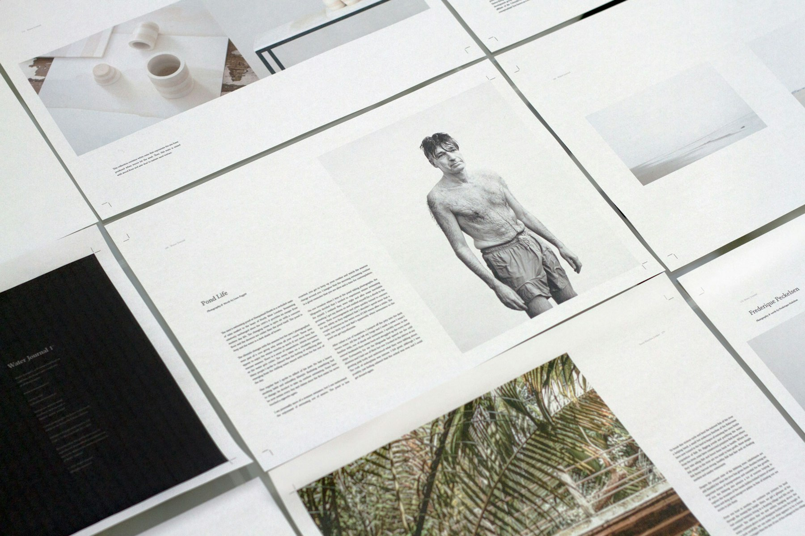
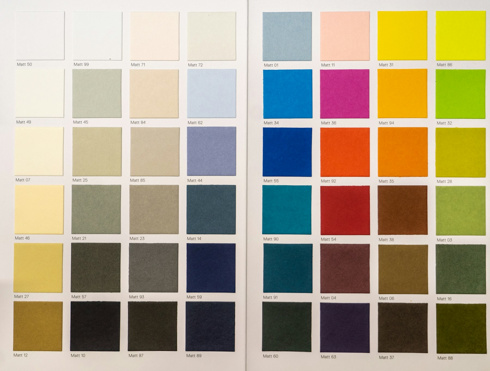
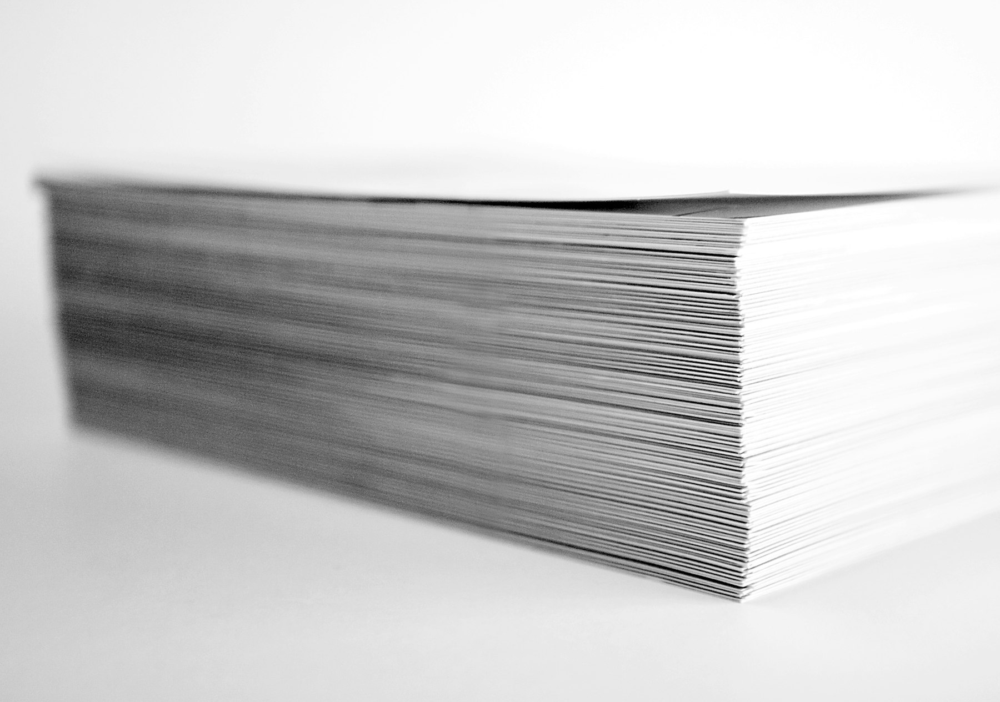

The system, rendered rather than described.
Version 2. Deep blue ground, cream counter-ground, one amber accent. Every pair below is measured, not estimated.
This page is built from the same tokens as the site. If something here looks wrong, the site is wrong too.
Two grounds, one accent.
Blue is the default. Cream is the exception, used to mark a turn in the argument rather than for decoration.
- Deepest, footer#05101F blue-900
- Primary ground#0A1B33 blue-800
- Raised surface#12263F blue-700
- Hover, hairline#1B3452 blue-600
- Cream ground#F7F4ED paper
- Accent#E0A458 amber
Measured contrast
Every text colour against the ground it is actually used on. AAA is 7:1 for body text, AA is 4.5:1.
- Heading on blue#F2F6FB 15.89:1 AAA
- Body on blue#C8D4E2 11.48:1 AAA
- Muted on blue#9FB0C4 7.79:1 AAA
- Accent on blue#E0A458 7.90:1 AAA
- Heading on cream#0A1B33 15.70:1 AAA
- Body on cream#3A4657 8.72:1 AAA
- Muted on cream#5A6879 5.18:1 AA
- Accent on cream#8A5A1F 5.37:1 AA
Newsreader for display, IBM Plex Sans for everything else.
Headings carry weight 500. A 400-weight hairline serif was the readability fault in version 1, and it is worth not repeating.
Display, clamp 3rem to 6rem
Print you never have to check.
Heading 1, clamp 2.5rem to 4.25rem
Thirty-six organisations
Heading 2, clamp 2rem to 3.1rem
Seven disciplines, one specification
Heading 3
The methods, and what each one is for
Lead
For 31 years, KAPS has printed for organisations that cannot afford a reprint.
Body
What kept it going for three decades was not growth. It was the boring thing: organisations that could not afford a mistake found that they did not have to check.
Eyebrow, mono, uppercase, no index numbers
What comes off the pressCream, and everything on it.
Every component flips polarity here. If a component is added to the site and not given a paper variant, it renders white on cream and disappears. This section is the test for that.
Card on cream
White surface, hairline in ink at 14 percent, shadow instead of a border on hover.
Second card
The grid is the same grid. Only the polarity changes.
- Visiting cards
- Letterheads
- Envelopes
- Brochures
- Annual reports
- Certificates


On the blue ground.
Card
Raised surface, hairline border, three pixel lift on hover.
Card
Radius 14. The two pixel scale read as an oversight rather than as restraint.
Chip. A cream artefact that drifts, carrying a real specification.
Graded, never dropped in raw.
Raw stock on a branded ground looks like stock. Every image is desaturated, contrast lifted, exposure pulled down, then vignetted so its edges fall off into the page instead of stopping at a border.
- On bluegrayscale .30, contrast 1.16, brightness .74, vignette
- On creamgrayscale .16, contrast 1.14, brightness .95, ink wash
- Band, with typeheavy left scrim, so the type has a ground
- Band, warmfull saturation, for foil, ink and stock
- Hoverscale 1.04, colour returns



Full bleed, with a scrim where the type sits.
Both edges are feathered into the sections above and below, so a band never reads as a rectangle dropped onto the page.
Thirteen moves, and one rule.
The rule: no move may be the only thing making content visible. Every hidden state lives in CSS as a class, has a scroll trigger, and has a timed backstop. Three things must fail before anything disappears.
- Smooth scrollLenis, 1.05s, wheel only
- Line maskheadings split by rendered line, 70ms stagger
- Revealopacity and 10px rise
- Wipeclip-path, for photographs and specimens
- Tracksticky column, scrubbed progress bar
- Roster marqueeSplide, drifting, draggable, pauses on hover
- Nav retreatheader steps aside for the press
- Tiltpointer parallax on a 3D face
- Parallaxbands drift 12 percent of their own height
- Floatchips drift on a 7 to 9 second cycle
- Bundlefive sheets close, a cover lands
- Page transitiona paper wipe between pages
- Scroll progressa hairline filling with amber
All thirteen stand down under prefers-reduced-motion. The page reads as a complete static document with the motion layer removed entirely.
Don't.
- Don't put an index number in an overline. “01 · Logo assets” is a tell.
- Don't add a sheen sweep to the primary button. It was tried and removed.
- Don't set a heading below weight 500. That was the readability fault in version 1.
- Don't drop a photograph in ungraded. It will read as stock, because it is.
- Don't let a tween own a visible state. CSS owns it; the tween only moves it.
- Don't run three sections of the same background in a row. Alternate, or the page flattens.
- Don't pin a section for longer than about 1.5 viewports.